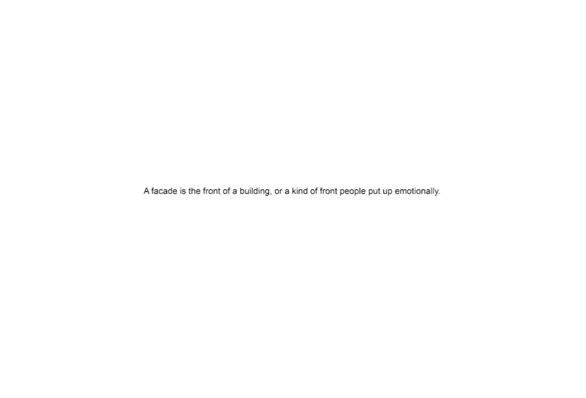
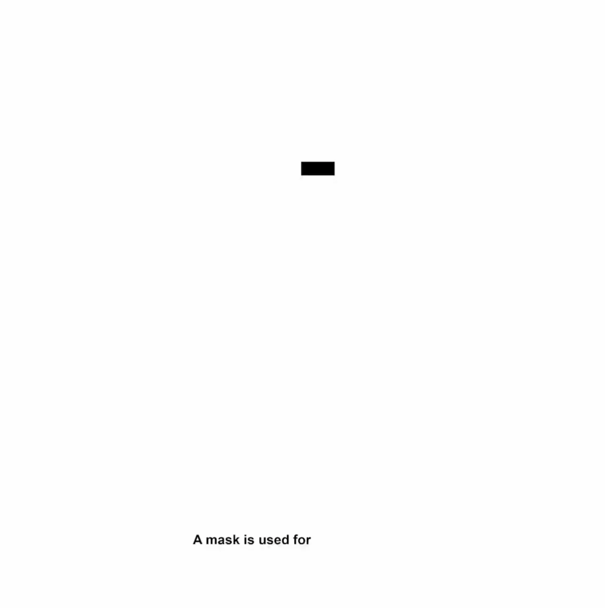
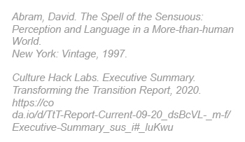

Oh hi, you.
Before you read
about this project,
I’d like to take
this opportunity to ask,
How are things with
your family, friends?
I hope everything is well :)
if not,
I’m sure things will
fall into place
eventually.
Though,
until that happens
(and I promise it will)
Do offer them a hug
every once in a while.
The best place
In the world..
Is formed
inside a hug.
Annnnnyways…
Hi.
My name is Jack,
and this project
is simPly about
Freedom.
(..and totally my opinion about it)
Though, I think at this very moment,
like,
right now,
It's fair to say,
You and I are quite spoiled
To have freedom -
Of choice, expression, voice, thought,
movement, belief, assembly…
But, because of
social
—
media
nOrms
Standards

we are almost expected
to choose to
Follow these Medias
Meet these Standards
Live up to these Expectations
To own what this Person has
In order to stay
In touch
Respected
Normal.
In touch
Respected
Normal.

(repeated, addicted)
A Freedom we come into
within
our current environment.
Especially,
our urban environment.
Consequently,
True freedom can really only be found in protection of each other's freedom.
And even further,
In protection of
All life’s need to
flourish.

This project,
When given the opportunity to
Design anywhere
To do (and be) anything
I chose instead
an existing site
Somewhere that really-
really needed
a hug.
{image 5}
St James
{image 6}
was a theatre
That adapted,
Transformed itself to fit in
With time.
*
{image 35}
Now, the fragile skin
*
{image 45}
Of St James
Sits in silence,
{image 7}
*
{image 36}
With wounds that trace time better than any of
the neighbouring tall modern shiny boxes
Weakened as the city grew
And the eyes
are windows, slammed shut.
{image 8}
Now it hides behind a mask
Flawed
Outcasted
Not up to standard.
{image 9}
One last face
For St James,
Between two skins
A hug
In hopes of it being
Restored one day
Soon.
{image 10}
An architectural tree hug almost
{image 11}
One that takes form
From significant existing
*
{image 37}
Elements of the facade
{image 12}
A new skin
That
veils away
{image 32}
from
Order
Surveillance
Society
{image 13}
To protect the theatre.
For us to hide, for a moment.
{image 14}
And there
between two skins,
a space is formed.
{image 15}
An in-between space
In protection of all life’s
need to flourish.
Acknowledging that
nothing is
Static.
{image 16}
Or alone
Rather alive
{image 17}
Pulsing at many scales
Through the relationship of
each other and the other.
The more-than-human
{image 18}
*
{image 38}
The architecture
{image 48}
*
{image 39}
The sonic space
{image 20}
*
{image 40}
The human
{image 21}
*
{image 41}
This new facade
feeds curiosity
Through the
windows
{image 22}
without giving too much
away.
Encouraging those low
On battery
social battery
To hide and recharge
{image 23}
for a moment.
A space that asks
Performers to
Stop Performing.
{image 24}
Unmask
In order to embrace
the space
the hug
and everything that makes up
this hug,
including yourself.
{image 25}
As the architecture
Tempts you
To
make noise
{image 26}
From the tap dancing
Floors
To the echoing sonic
Corridors
{image 27}
That conducts
And therefore
resurrects
{image 28}
the heart and soul of
St James.
The pulse
that is,
the Hug.
{image 29}
This Hug,
will not last forever.
{image 30}
The aging materials
become the instrument
that measures
the time that is left.
{image 31}
This Hug,
will not last forever,
Because it cannot be
*
{image 42}
owned by Anyone,
*
{image 43}
because freedom
*
{image 44}
Is the enemy of Possession
And Possession
equals Permanence.
Oh, and hey,
before you keep
scrolling
tapping
swiping
I hope you are doing well too. I hope that you had a wonderful new years and that 2022 will bring out a
new better -
you.
And, much like spotify
Don’t be afraid to look back.
To stop performing
even just for a moment.
To unmask your
facade.
Kind wishes,
J.
{image 49}